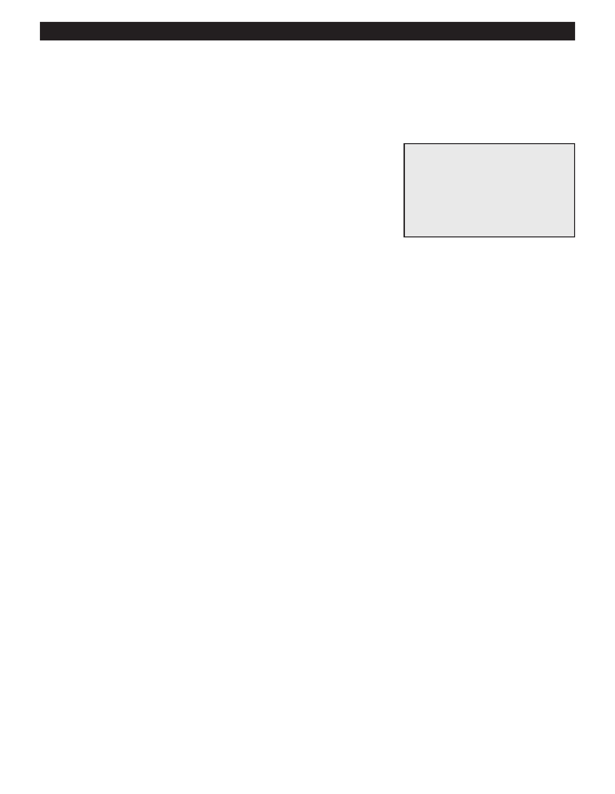

PA RT I C I PA N T R E S O U R C E G U I D E
Testing Single-pole Wall Switches
What do you do when you flick your single-pole wall switch and it fails to turn the light on?
Well, test the switch for continuity to see if it is faulty.
Safety
Tools and Materials Needed
Make sure the power is off before you test the switch.
Lockout/tagout device
Use lockout/tagout procedures.
Circuit tester or multimeter
Continuity tester or multimeter
Use insulated tools.
Insulated screwdriver
Wear eye protection and rubber-soled shoes. Remove jewelry.
Notes:
37